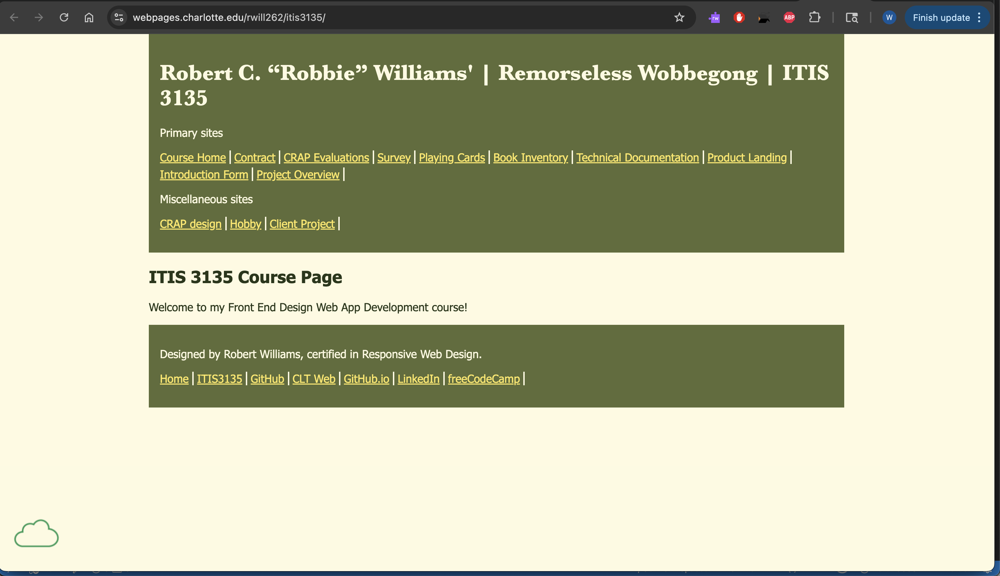

Peer Review 1 - Williams, Robbie

- Submission: Correct link. The course page loads and connects properly from the root site.
- File/Folder Names: The repository appears organized and follows expected structure. The itis3135 folder is present along with supporting folders like images, scripts, styles, and components.
-
Design:
- The site is simple and easy to navigate, which is good.
- The overall design feels a bit plain and could use more styling to stand out.
- Adding better spacing, color balance, and stronger visual hierarchy would improve the look.
-
CRAP:
- Contrast: Text is readable, but the design could use stronger contrast choices to feel less basic.
- Repetition: Structure is somewhat consistent, but make sure fonts and spacing stay the same across all pages.
- Alignment: Layout is okay, but spacing and positioning could be more intentional.
- Proximity: Grouping related content closer together would improve readability.
-
Page has within it:
- Header: Yes
- Main: Yes
- Footer: Yes
- Nav: Yes
- Header has site/brand header with text in an h1: Yes
- Main starts with name of page as an h2 and does not include name of site/brand: Yes
- Page has brand tagline: No clear tagline was found. Adding one would improve consistency and branding.
-
Footer:
- Navigation/menu is partially present but could be more complete
- HTML validation link: Yes
- CSS validation link: Yes
- Notes: Overall, this is a solid starting point. The structure is there, navigation works, and the repo is organized. The main improvements would be focusing on design (making it less basic), adding a consistent tagline, making sure the footer includes all required links, and confirming validation buttons are present and working. Adding more content and personality would also help the site feel more complete.